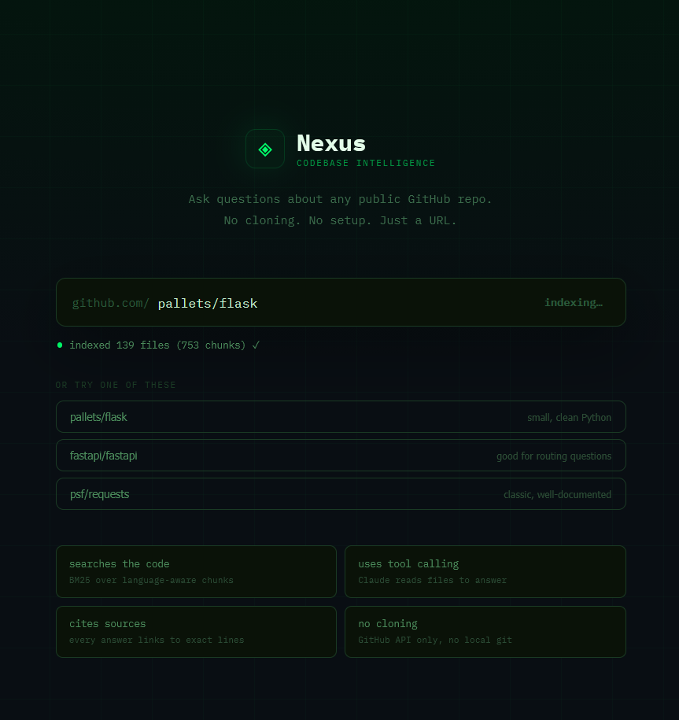
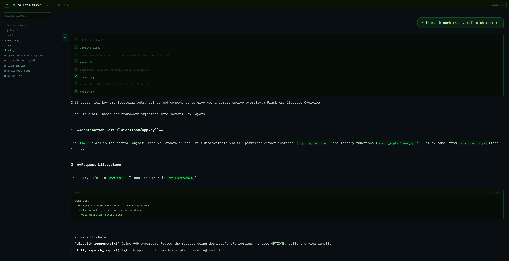

Nexus answers questions about a codebase by acting like an engineer reading it, searching,
opening files, following references, using a Claude agent with tool-calling over a BM25-indexed repo.
Below is a real session captured against the FastAPI repository. Click a question to watch the
agent work. Why not live? Each query calls the Anthropic API, which costs money per request, so
a public always-on instance isn't safe to host. Scroll down to run the real thing yourself in a minute.

The setup screen, paste any public GitHub URL and it indexes the repo.

Answering a question over the Flask codebase, the agent searches and reads files, then streams an answer with source citations.
Repository indexed. Ask me anything about how this codebase works, pick a question below to begin.
↑ click a question to replay the agent's actual tool sequence and answer
How it works
When you ask a question, the agent runs a tool-use loop:
search_codebase, BM25 over indexed chunks
read_file, pull a full file
list_files, explore structure
generate_docs, summarise a module
It calls tools, reads results, and decides what to do next, up to a safety cap on rounds, then streams a final answer over SSE with the source files it consulted.
Run the real thing
It's Dockerised, clone, add an Anthropic key, and bring it up:
git clone .../nexus
cd nexus
export ANTHROPIC_API_KEY=sk-ant-…
docker compose up
Nexus is a small distributed system, not a single script. The interesting engineering is in
the retrieval, the agent loop, and the streaming, and in the bugs that only show up when you
actually run it against real repos.
Request flow
React Frontend
TypeScript · streams tokens over SSE
▼
FastAPI Backend
async · agent tool-use loop
▼
Repo Parserfetch + chunk files
BM25 Indexin-memory retrieval
Claude APItool-calling agent
SSE Streaminglive token output
A question drives a tool-use loop: the agent searches the BM25 index, reads files, and decides
its next move, up to a safety cap on rounds, then streams the answer back over SSE with the
source files it consulted.
Architecture
Backend
FastAPI · async
Fetches repo files concurrently (asyncio.gather + semaphore), chunks them, builds a BM25 index, and streams over SSE.
Agent loop
Claude · tool-use
Multi-round tool-calling with four tools and a cap on rounds. Tracks consulted files and returns them as sources.
Front end
TypeScript · React
Live token streaming, a file tree that highlights consulted files, a syntax-highlighted viewer, strict tsc, no any.
Infra
Docker · nginx
Compose stack with an nginx proxy tuned for SSE, the backend on an internal network, and a CI pipeline.
Tech stack
Backend
FastAPI
Python async
Claude API tool-use
httpx GitHub fetch
Frontend
React
TypeScript strict
Vite
Search
BM25 rank-bm25
Custom chunking pipeline
Infra
Docker Compose
nginx reverse proxy
GitHub Actions CI
Design decisions
Why BM25 instead of embeddings? No embedding-generation cost or model download, instant indexing, and strong keyword recall, which matters for code, where identifiers and exact symbol names carry most of the signal. Simpler to deploy, and good enough that the agent can compensate with follow-up searches.
An agent loop, not one-shot RAG. Letting the model search, read, and decide its next step, rather than stuffing a fixed set of chunks into one prompt, means it can follow references across files the way a person would, which is what codebase questions actually require.
Engineering challenges & bugs fixed
BM25 returned nothing for common queries. The scorer produces negative scores when a term appears in many documents, and the code cut results off at zero, so a query like "how does auth work" silently returned no results. Root cause was using score sign as a relevance gate. Fixed by gating on token overlap instead, and added a regression test.
The per-file cap fought the result limit. Capping results before applying a per-file diversity limit let one large file starve the output. Reordered so other files fill the gaps.
Fake streaming → real streaming. An early version chunked a finished response to look live; replaced with genuine token streaming over SSE, and fixed an nginx read-timeout that silently killed long answers mid-stream.
Container networking. The frontend hardcoded localhost:8000, which breaks inside Docker; switched to a relative path proxied by nginx so dev and container both work.
Testing
11 tests, all runnable in CI with no API key.
Integration tests for the agent tool-calling loop using a mocked Anthropic client, verifying tool dispatch, the round-cap safety limit, and source tracking.
A regression suite for the retrieval bugs above, so the BM25 failures can't silently return.
Reliability & safety
A tool-call round cap prevents the agent from looping forever; it always terminates and returns what it has.
Graceful degradation, a missing API key degrades cleanly rather than crashing on import, so the app and its tests still run.
Concurrent fetching with a semaphore bounds load on the GitHub API instead of firing unbounded requests.
Deployment
Dockerised services via Compose, frontend and backend build and run with one command.
nginx reverse proxy in front, tuned for SSE (long read timeouts, buffering off) so streaming responses aren't cut short.
Environment-based configuration, API keys and tokens injected via env vars, never baked in. CI validates the build on every change.
Scaling considerations , future work, not yet built
Move the BM25 index out of process into a dedicated search service so indexing and querying scale independently.
Background indexing workers, so large repos index without blocking requests.
Response caching and persisting the index to disk so restarts don't re-index from scratch.
What I'd do differently
Separate the indexing and querying paths earlier, they have different lifecycles and bundling them complicated the request flow.
Persist the index from the start, rather than rebuilding it in memory on every restart.
Add telemetry around tool calls early, to see where the agent spends its rounds instead of inferring it from logs.
Honest limitations
The index is in-memory and rebuilt per session, fine for interactive use, but a restart re-indexes, and it's tested on normal-sized repositories rather than huge monorepos.
Retrieval is BM25 (keyword), not semantic, great for code identifiers, but a question worded with no overlapping terms can miss; the agent compensates by reformulating searches.
Each query makes paid API calls, which is exactly why this page is a walkthrough rather than a public live instance.
The full audit trail, with diffs and test output, is in the
repository.